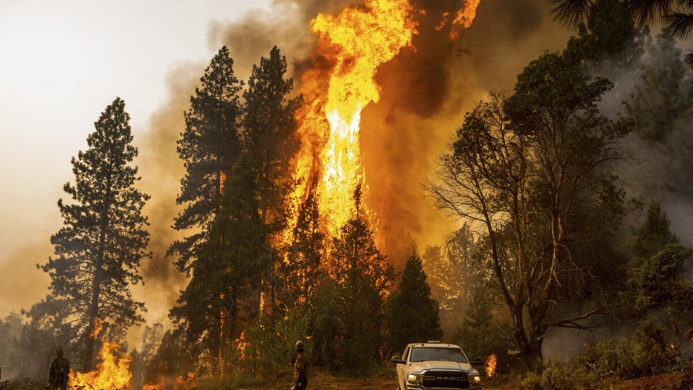

Using Machine Learning to Predict Wildfires in CA
Comparing different models
Background
- Many factors might contribute to the spread of wildfire, including climate and vegetation
- California has a Mediterranean climate with warm winters, and cool and dry summers
- This climate makes California very prone to wildfires
- New applications for machine learning (ML) are being discovered every day
- Many different methods can be used to train a ML model to predict wildfire spread
- Research done on other Mediterranean climates has found that multiple linear regressions (MLR) and multilayer perceptrons (MLP) provide more accurate predictions than other kinds of ML models

Rationale
- California is known for its frequent wildfires
- In a year, wildfires can kill dozens of people, misplace thousands, and cause tens of billions of dollars in property damage
- A reliable way to predict wildfires could mitigate this tremendously
- In previous studies, Multiple Linear Regressions (MLR) and Multilayer Perceptrons (MLP) have been shown to be accurate in predicting wildfire spread
- Weather and temperature play a big role in how wildfires start and spread
- There is lots of data available on historical wildfires and historical temperature conditions in California
- Meaning, a machine learning model could be trained to predict wildfires based on this temperature and wildfire data
Research practicum
- Historical fire and temperature data were used to train both an MLR and an MLP to predict wildfires in California
- Each model’s R2 value and mean average error (MAE) were calculated
- The models were compared to a control that calculated theaverage area and centroid of all of its training data
- Since neural networks are particularly well suited for complex input data, an MLP trained to predict fires should be more accurate than other kinds of machine learning models.